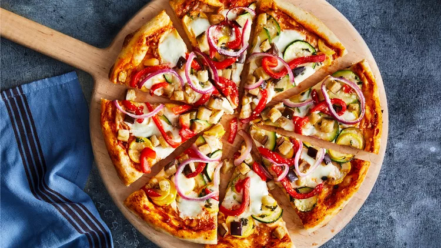

Pizza

Description
Prepare the pizza dough and spread it out. Add a flavorful tomato sauce and a generous amount of gooey
mozzarella cheese. Customize with your favorite toppings and bake until the crust turns golden and the cheese is
melted to perfection. Finally, savor the delightful aroma and indulge in a delicious homemade pizza that is sure
to satisfy your cravings.
Ingredients
- Pizza dough (store-bought or homemade)
- Tomato sauce
- Mozzarella cheese, shredded
- Toppings of your choice (e.g., pepperoni, sliced bell peppers, mushrooms, olives, etc.)
- Olive oil
- Salt and pepper to taste
- Italian seasoning (optional)
Steps
- Preheat your oven to the temperature indicated on your pizza dough package or to 475°F (245°C) if you're
using homemade dough.
- Roll out the pizza dough on a floured surface to your desired thickness. If using store-bought dough, follow
the package instructions for any necessary resting or rising time.
- Transfer the rolled-out dough onto a baking sheet or a pizza stone dusted with flour or cornmeal to prevent
sticking.
- Brush the surface of the dough with olive oil to create a barrier and prevent it from becoming soggy.
- Spread a thin, even layer of tomato sauce over the dough, leaving a small border around the edges for the
crust.
- Sprinkle a generous amount of shredded mozzarella cheese over the sauce.
- Add your preferred toppings, such as pepperoni, bell peppers, mushrooms, olives, or any other ingredients
you like. Be creative!
- Season the pizza with a pinch of salt, pepper, and Italian seasoning, if desired.
- Carefully place the pizza in the preheated oven and bake for about 12-15 minutes, or until the crust is
golden brown and the cheese is melted and bubbly.
- Once the pizza is done, remove it from the oven and let it cool for a few minutes. This allows the cheese to
set slightly and makes it easier to slice.
- Slice the pizza into wedges or squares and serve hot.